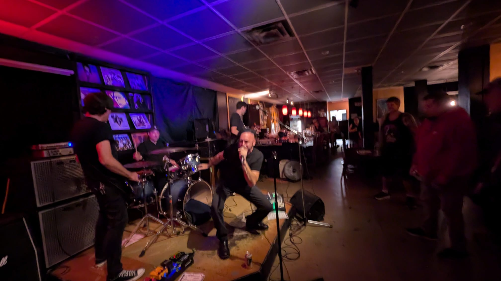
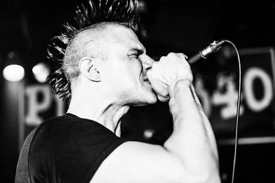
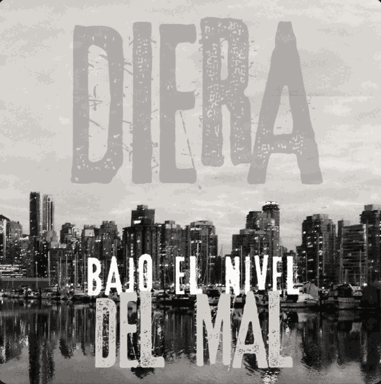

Lift the Anchor
Lift the Anchor is a melodic punk rock band from Vancouver, British Columbia — hook-driven songs built on big choruses, gang vocals and a rhythm section that doesn't let up. The writing keeps coming back to fresh starts: cutting ties, leaving a place behind, and the stretch of road right after. For fans of Sum 41, Silverstein, Four Year Strong and Papa Roach.
Behind the kit my job here is the engine room — fast, straight-ahead punk drumming that holds the tempo up front and leaves space for the vocal hooks to land. The demos below are the current live set. Promoters and venues can pull photos, bio and stage plot straight from the press kit.
Tracks: Hello RPM (Demo) · Aurora (Demo) · Cornered (Demo)

Granite
Granite is a Vancouver metal and grunge band — downtuned riffs, raw-throated vocals and a live show that leaves rooms sweat-soaked and ears ringing. The sound sits somewhere between 90s Pacific Northwest grunge and modern heavy: sludgy low end, plenty of groove, and songs that shift gear rather than sit on one riff.
This is the heaviest project I drum for, and the most fun to play live — lots of half-time pockets, tempo drops and space to hit hard. Granite has the deepest catalogue of any of these bands, with nine tracks currently in rotation. Full band photos, bio and live shots are in the press kit.
Tracks: Blindsight · Skookum · Hemogoblin · Pony Up · Sour Diesel · Tiamat · Cursed · Astro Fungus · Devilbliss

Past projects
Bands I've played with but am not currently active in. The music's still here.
Bound By None
Bound By None is a Vancouver, BC punk rock band — fast, riff-driven songs with plenty of low end and hooks that stick around after the last chorus. Short songs, no filler, built for a small room and a loud PA.
Two Bound By None tracks, No Other and On The Double, are in rotation on the jukebox player here on the site, so you can hear the drumming rather than take my word for it.
Tracks: No Other · On The Double

Diera
Diera is a punk rock band out of Barcelona, Spain — Spanish-language punk with speed, melody and bite. This is the project that connects the Vancouver half of what I do back to where I'm from, and the lyrics carry a directness that doesn't really translate: La tragedia de los comunes and Bajo el nivel del mal are as much statements as songs.
The catalogue includes Bajo el nivel del mal, Groenlandia, La tragedia de los comunes, Sebastopol García, and Per mi, which is sung in Catalan rather than Spanish. All five are on the jukebox player here on the site.
Tracks: Bajo el nivel del mal · Groenlandia · La tragedia de los comunes · Sebastopol García · Per mi (in Catalan)

Dead Fast
Dead Fast is a Vancouver, BC punk rock band — quick, melodic and built to keep a room moving. The songs lean on tempo and dynamics more than volume, with enough ska and skate-punk in the DNA to keep things bouncing rather than just fast.
The album Second Nature is on Spotify. Three Dead Fast tracks also play on the site jukebox: Skamen, Land and Sea and Star Shines Through.
Tracks: Skamen · Land and Sea · Star Shines Through
🛠️ Tools
Razor Cut — drop in an audio file and it splits it into separate clips wherever it goes quiet. Handy for chopping up practice recordings, takes or voice memos. Everything runs on your device; nothing uploads.
Click Track — a metronome you can play in the browser and a click track you can keep. Set the tempo, time signature, subdivision and accent, hit play, then download a WAV to practice or track to. No app, nothing to install.
Gig Checklist — pick your show type (breakables, full kit, festival, studio or rehearsal) and tick off your gear so nothing gets left behind. Your progress is saved on your device, and the last box sets off a celebration.
Drum Trigger Visualiser — your kit on screen, lighting up as you play. Drive it from an e-kit over MIDI or from a live audio feed, then set the background to green or transparent and drop it over drum cam footage.
Cymbal Designer — engrave or paint artwork onto a virtual cymbal. Quarter symmetry repeats every stroke at 90°, 180° and 270°, so one gesture wraps the whole cymbal. Pick the size and finish, then download it as a PNG.
Common questions
A few things promoters, venues and other musicians ask most often.
Who is Miki Drummer?
Miki is a drummer based in Vancouver, British Columbia, originally from Ibiza, Spain, with over 20 years behind the kit. He plays live and in the studio across punk rock, metal and grunge, and takes on remote drum recording for artists anywhere.
What bands does Miki drum for?
Two active projects: Lift the Anchor (Vancouver punk rock) and Granite (Vancouver metal and grunge). Bound By None (Vancouver punk rock), Dead Fast (Vancouver punk rock) and Diera (Barcelona punk rock) are past projects.
Where are the bands based?
Four of them — Lift the Anchor, Granite, Bound By None and Dead Fast — are based in Vancouver, BC. Diera is based in Barcelona, Spain, and sings in Spanish and Catalan.
Can I book Miki for a show or a session?
Yes — for live shows, fill-in gigs, studio sessions and remote drum tracks. Rates, turnaround and what's included are on the services page, which also covers drum rental, kit tuning and lessons in Vancouver.
Where can I listen to these bands?
Tracks from Bound By None, Dead Fast and Diera play on the jukebox. Lift the Anchor is on Bandcamp, and both Lift the Anchor and Granite have full press kits with photos and bios.
Looking for a drummer in Vancouver?
If you're a band down a drummer, a promoter filling a bill, or an artist who needs real drums on a track, get in touch. I cover live shows and fill-ins around Vancouver and the Lower Mainland, studio sessions, and remote drum recording for anyone outside BC.